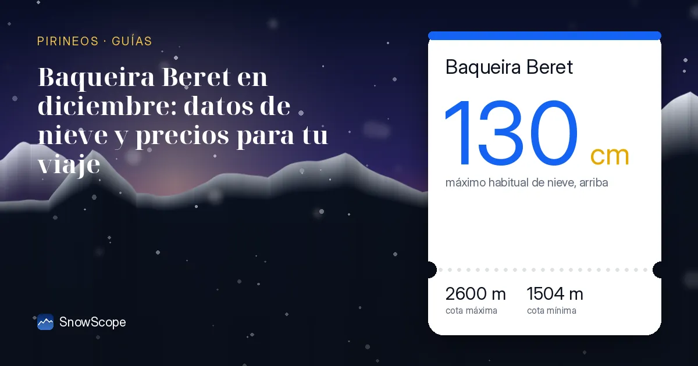
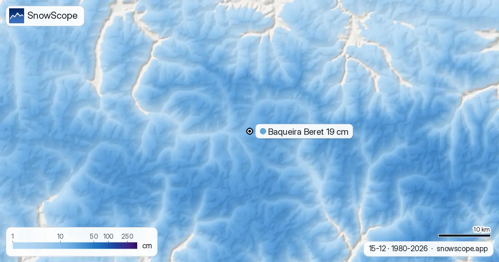

Baqueira Beret en diciembre: datos de nieve y precios para tu viaje
Baqueira Beret, en la Val d'Aran, es uno de los grandes nombres del Pirineo, pero ¿es una buena apuesta para diciembre? Nuestro histórico de nieve muestra un comienzo de temporada modesto, así que la semana que elijas importa más de lo normal.
Consulta la previsión de nieve en tiempo real de Baqueira Beret en la app SnowScopeEspesor de nieve, alertas de nieve polvo y mapa 3D, gratis.
El Val d'Aran y sus alturas
Baqueira Beret se encuentra en España y ofrece una amplia zona para explorar. La zona de esquí cartografiada tiene 154 km de pistas y 36 remontes.
La estación se extiende desde la base de los remontes a 1504 m hasta la cima a 2600 m, dando un desnivel de 1096 m.

La nieve de diciembre en números
Mirando nuestro historial de nieve de 46 inviernos, desde 1980-81 hasta 2025-26, el espesor de nieve en diciembre suele ser bastante escaso en la base. A 1504 m, el espesor habitual en diciembre es de 8 cm, y el habitual el 15 de diciembre es de 9 cm. Un diciembre pobre en nieve trae 0 cm o menos aproximadamente 1 invierno de cada 10, mientras que un diciembre rico en nieve puede alcanzar 37 cm o más aproximadamente 1 invierno de cada 10.
Más arriba, a media montaña a 2052 m, el espesor habitual en diciembre es de 20 cm, con 19 cm el 15 de diciembre. En la cima de los remontes a 2600 m, el espesor habitual en diciembre es de 30 cm, y el habitual el 15 de diciembre es también de 30 cm. A esta altura, un diciembre rico en nieve alcanza 77 cm o más aproximadamente 1 invierno de cada 10.
Si miras la proporción de inviernos con 30 cm o más a media montaña, aumenta a medida que avanza el mes: 22 por ciento del 1 al 7 de diciembre, 30 por ciento del 8 al 14 de diciembre, 35 por ciento del 15 al 21 de diciembre y 41 por ciento del 22 al 28 de diciembre. En la cima, la proporción de inviernos con 30 cm o más es del 39 por ciento del 1 al 7 de diciembre, 46 por ciento del 8 al 14 de diciembre, 52 por ciento del 15 al 21 de diciembre y 59 por ciento del 22 al 28 de diciembre.
El precio, comprobado
Los viajes de esquí requieren presupuesto, así que miremos los costes verificados en la web oficial para la temporada 2026-27. Un pase de 1 día para adulto con la tarjeta recargable 'Baqueira Pass' cuesta 70,00 €. Si compras un 'Baqueira Ticket' estándar de 1 día para adulto, el precio es de 74,00 €. Para una estancia más larga, un 'Baqueira Ticket' de 6 días para adulto tiene un precio de 359,00 €.
Baqueira o Astún-Candanchú
Ayuda comparar Baqueira Beret con Astún-Candanchú, otro destino español. Astún-Candanchú tiene una zona de esquí cartografiada con 35 km de pistas y 17 remontes, con alturas que van desde 1659 m hasta 2272 m, dando un desnivel de 613 m.
En nuestro historial de nieve para Astún-Candanchú, la base a 1659 m tiene un espesor habitual en diciembre de 18 cm y 13 cm el 15 de diciembre. Su cima a 2272 m tiene un espesor habitual en diciembre de 38 cm y 29 cm el 15 de diciembre. En cuanto a costes en Astún-Candanchú, un pase conjunto de 1 día para adulto comprado online para la temporada 26-27 es de 54,50 EUR, mientras que en taquilla es de 59,50 EUR, y un pase conjunto de 5 días para adulto comprado online es de 237,00 EUR.
Primera nieve y tendencia
En nuestro historial de nieve, el primer día habitual de nieve duradera en la base es el 10 de noviembre. A media montaña es el 8 de noviembre, y en la cima llega para el 4 de noviembre.
Comparando periodos pasados, la media de diciembre a media montaña era de 17 cm a mediados de los primeros 15 inviernos (1980-81 a 1994-95) y de 20 cm a mediados de los últimos 15 inviernos (2011-12 a 2025-26). El invierno pasado, en diciembre de 2025, la media fue de 9 cm en la base, 14 cm a media montaña y 19 cm en la cima.
La nieve ahora muestra 0 cm en la base y media montaña, y 1 cm en la cima, con 9 cm de nieve nueva esperados en los próximos 7 días en la cima. La previsión de nieve nueva a dos semanas para media montaña y superior pronostica una media de 14 cm con un rango de 6 cm a 22 cm.
Consejos para esquiadores
- Apunta a las últimas semanas de diciembre, como del 22 al 28 de diciembre, cuando la proporción de inviernos con 30 cm o más alcanza el 59 por ciento en la cima.
- Alójate más arriba, cerca de los niveles de media montaña y cima (2052 m a 2600 m) donde los espesores de nieve natural son más fiables que en la base.
- Compra la tarjeta recargable 'Baqueira Pass' en la web oficial para obtener la tarifa de 1 día de 70,00 € en lugar de 74,00 €.
- Comprueba siempre el boletín local de aludes antes de salir fuera de pista, especialmente al principio de la temporada cuando las capas de base son finas.
Más mapas (sitios externos)
Referencias y créditos
- Baqueira Beret, official prices (tarifas), season 26-27 www.baqueira.es/es/tarifas
- Astún, official lift pass prices (tarifas 26-27) astun.com/forfaits/
- SnowScope, December snow at three heights and today's snow map snowscope.app/
Sobre estas cifras
Cifras de nieve: histórico de nieve de SnowScope, 46 inviernos pasados (1980-81 a 2025-26) a tres alturas de cada estación (un modelo del pasado corregido por altitud: una estimación para una zona, no mediciones de la estación); cifras de diciembre calculadas con los espesores diarios de esos inviernos. Nieve actual y tendencia a dos semanas: previsiones de SnowScope (tendencia de ECMWF y GFS, un rango, no una promesa). Remontes y pistas: cartografía de OpenSkiMap. Precios: las páginas oficiales de abajo, consultadas el 2026-11-13; los precios pueden cambiar, compruébalos antes de reservar.
Boletines oficiales de aludes: Lauegi – Conselh Generau d'Aran
Citar este informe
Para investigación, docencia o prensa: cifras y gráficos reutilizables libremente bajo CC BY 4.0 con esta cita.
SnowScope (2026), Baqueira Beret en diciembre: datos de nieve y precios para tu viaje, https://snowscope.app/blog/es/2026/11/baqueira-beret-december-ski-snow-odds-price-2026.html, consultado el 2026-11-14
SnowScope (Atlas Labs). (2026, November 14). Baqueira Beret en diciembre: datos de nieve y precios para tu viaje. SnowScope snow reports. https://snowscope.app/blog/es/2026/11/baqueira-beret-december-ski-snow-odds-price-2026.html
BibTeX
@misc{snowscope2026baqueiraberetdecemberski,
author = {{SnowScope (Atlas Labs)}},
title = {Baqueira Beret en diciembre: datos de nieve y precios para tu viaje},
year = {2026},
month = nov,
howpublished = {\url{https://snowscope.app/blog/es/2026/11/baqueira-beret-december-ski-snow-odds-price-2026.html}},
note = {Published 2026-11-14 13:29 UTC; accessed 2026-11-14}
}· CC BY 4.0 · Métodos, datos y herramientas →
Baqueira Beret: nieve y temperatura según la altura, este invierno vs el pasado (herramientas) →
Sigue Baqueira Beret
Gratis: un aviso cuando llega la nieve y la previsión cada mañana.